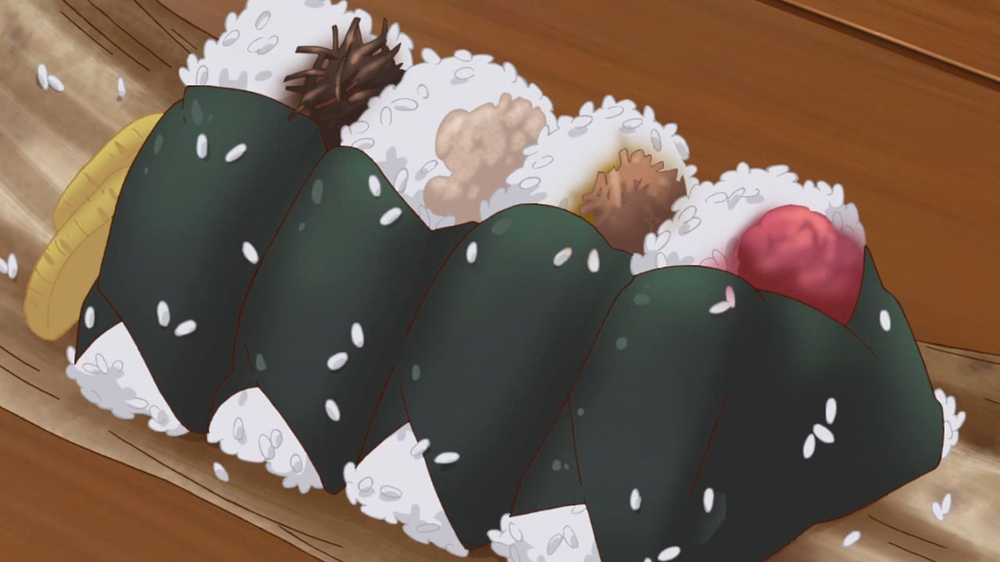

main page
Onigiri

Ingredients
- kosher/sea salt
- 4 sheets of seaweed
- salted salmon
- okaka
- tuna mayo
- 3 umeboshi (Japanese picked plum)
- seasoned kombu
- toasted white and black sesame seeds
Steps
- Cut the nori sheets in thirds
- First, wet both of your hands with water in order to prevent the rice from sticking to your hands
- Scoop out a handful of warm rice into one hand. Create a small well in the center of the rice. Put one kind of filling inside. Then mold the rice with your hands around the well to cover your filling completely
- Press the rice around the filling to gently form the rice into a triangle.
- Wrap the onigiri with nori seaweed
- Place a little bit of each filling on top of onigiri so we know which kind it is.
Happy eating!